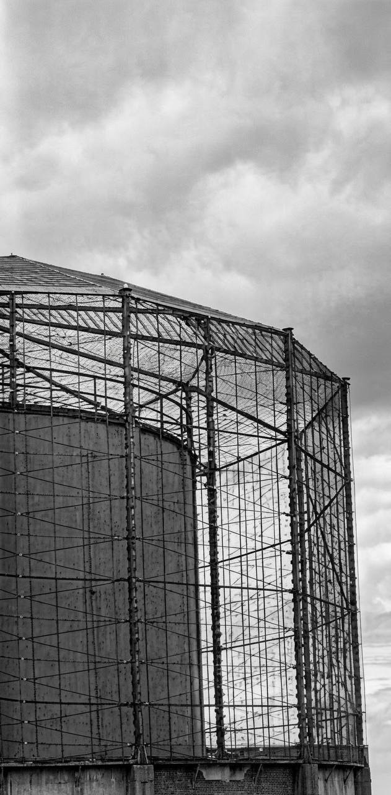
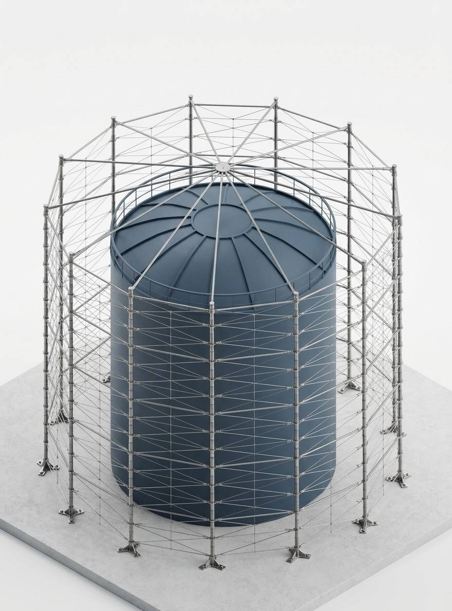
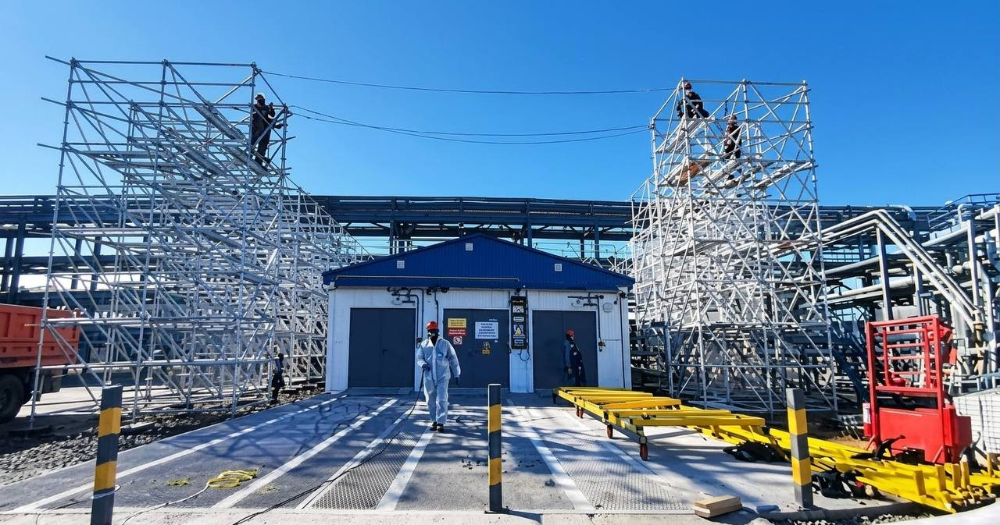

Внешний барьер
Дополнительный рубеж защиты вокруг объекта.
STROITEL GROUP — ЗОК «СФЕРА-ПРО», строительно-монтажные работы и реализация комплексных проектов.
Первая линия обороны объекта. Внешний контур физической защиты, предназначенный для снижения воздействия угроз и повышения живучести защищаемой инфраструктуры.

ВНЕШНИЙ ЗАЩИТНЫЙ КОНТУРСогласно представленным материалам, ЗОК «СФЕРА-ПРО» формирует внешний контур физической защиты. Система выносит точку подрыва дальше от объекта и помогает уменьшить плотность поражающих факторов.
В материалах ЗОК «СФЕРА-ПРО» указана модульная конструкция и возможность сборки вручную без применения сварки и огневых работ.
Конкретная конфигурация, состав и применимость системы определяются проектом и условиями объекта.

Система рассматривается как часть комплексного подхода к обеспечению живучести объекта — от первого контакта до ликвидации последствий.
Дополнительный рубеж защиты вокруг объекта.
Защита критически важного оборудования от осколочного воздействия.
Снижение риска вторичных разрушений конструкций.
Комплект документации и экспертное заключение МЧС — согласно представленным материалам.

В предоставленной презентации указано соответствие СП 542.1325800.2024 и разработка проекта при научно-техническом сопровождении НИУ МГСУ. Применимость требований и состав документации уточняются для конкретного проекта.
Выполнение инженерных и строительных задач, включая прокладку наружных и внутренних сетей и комплексную организацию работ.
Инженерные сети и коммуникации для объектов различного назначения.
Строительство и монтаж сетей теплоснабжения и сопутствующей инфраструктуры.
Строительно-монтажные работы по объектам газоснабжения.
Комплекс строительно-монтажных работ в рамках проекта и технического задания.
Организация и координация выполнения комплекса работ на объекте.
Комплексная защита объектов и инженерных площадок.
Подробнее о системе ↗Опыт в строительной сфере, инженерных задачах и комплексной реализации проектов.
Информация о членстве в саморегулируемой организации. Сведения о конкретной ассоциации, уровне ответственности и выписку из реестра можно предоставить заказчику по запросу.
Состав работ, сроки, стоимость и организационные условия определяются после изучения технического задания и исходных данных объекта.
Напишите нам, чтобы обсудить ЗОК «СФЕРА-ПРО», строительно-монтажные работы или генеральный подряд.
В сообщении укажите объект, местоположение и интересующее направление работ.